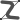

L'éditeur "Vue de haut"
Nous y voilà ! Comme vous le savez sûrement déjà, VAE permet de créer de manière simple des salles qui seront en suite observables en trois dimensions. Mais avant cette folle expérience il vous faut dessiner votre salle. Pour cela, rien de plus simple, VAE met à votre disposition divers outils qui vous permettront de tracer des murs déplacables, des murs courbés, des surélévations etc.
Tracer des murs
Pour tracer un mur cliquez sur "Dessiner" .
Maintenez le clic gauche enfoncé afin d'obtenir le mur
que vous souhaitez en fonction de la longueur qui s'affiche, puis lachez le clic une fois que vous êtes satisfait du
résultat. N'oubliez pas que, pour vous assister, les murs sont aimantés et qu'il vous est possible d'activer la grille
magnétique .
Modifier des murs
Une fois le(s) mur(s) tracé(s) vous pouvez le(s) sélectionner à l'aide de l'outil "Sélectionner"  en cliquant sur le mur ou en definissant une zone de sélection. Cela vous permettra de les déplacer et/ou de changer certains
de leurs paramètres tels que la longueur, la mobilité, l'affichage ou l'angle(en degrés).
en cliquant sur le mur ou en definissant une zone de sélection. Cela vous permettra de les déplacer et/ou de changer certains
de leurs paramètres tels que la longueur, la mobilité, l'affichage ou l'angle(en degrés).
En outre, il vous est possible de créer des murs courbés grâçe à l'outil "Courbe" . Ceux-ci sont créés de la même manière qu'un simple mur, à la différence qu'une fois sélectionnées, vous pourrez choisir leur courbure via 2 points de contrôles. Bien entendu, vous pouvez supprimer un mur ou n'importe quel objet en faisant un clic droit sur la ou les sélection(s) puis "Supprimer" ou bien en cliquant sur l'outil "Supprimer" .
Tracer des surélévations
Pour simuler en 3D la présence d'estrades ou bien de marches, il vous est possible de créer des surélévations via l'outil "Dessiner une surélévation" . Pour cela, créez vos points représentants les sommets de votre surélévation en vue d'architecte et veillez à la tracer dans l'ordre afin d'avoir une forme cohérente. Puis cliquez sur l'outil "Sélectionner" une fois terminé.